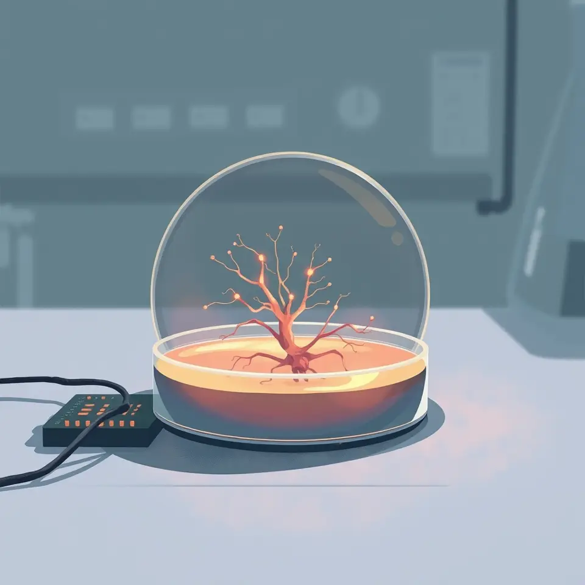

배양접시 속 미니 뇌, 차세대 초저전력 AI 대안 될까
배양접시에서 키운 미니 뇌가 초저전력 차세대 컴퓨팅 대안으로 주목받고 있다.

핵심 정리
- 배양접시 미니 뇌, 차세대 컴퓨팅 소재로 거론
- 초저전력 AI 대안 가능성 제시
- 실용화에는 검증 필요
배양접시 속에서 키운 미니 뇌가 차세대 컴퓨터의 소재가 될 수 있다는 관점이 소개됐다. 기존 AI 반도체의 전력 소비 문제를 보완할 대안으로 거론된 것이다.
보도는 이 기술이 초저전력 방식이라는 점을 강점으로 제시했다. 다만 실제 AI 연산 대안으로 쓰일 수 있는지는 아직 검증이 필요한 단계로 전해졌다.
기사는 기술의 가능성과 함께 한계도 짚었다. 생물학적 시스템을 컴퓨팅에 활용하는 연구가 어디까지 진전될지가 관건으로 보인다.
향후 관련 연구 성과가 축적되면서 차세대 AI 하드웨어의 방향에 영향을 줄지 지켜볼 만하다.
이 소식을 다룬 보도
- 배양접시 속 ‘미니 뇌’는 차세대 컴퓨터…차세대 초저전력 AI 대안 될까DongA Science